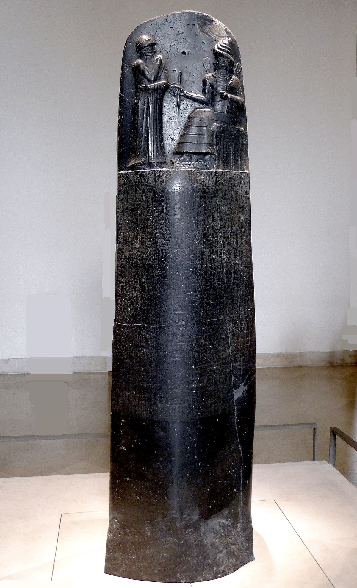

Sights
Babolno is an ancient city located 60 miles south of modern-day Baghdad in Iraq and was a very
important place in Iraq's history. It was built in 2300 b.C. by the ancient Akkadian-speaking
people of southern Mesopotamia.1750 to 1790 b.c. The city was known as a city with big
militarypower thanks to the king Hammurabi.

During Hammurabi's reign the city successfully managed to conquer neighboring cities and
later eaven concerd southern and central Mesopotamia Creating his new empire babylonia.
This led to Babylonia becoming a wealthy and influential city with the first ever written
laws.
One of Hammurabi's most known achievements was his rule “book” named “Code of Hammurabi”,
although I call it a book it was more of a big stone. The rules were written on human sized
black stones and stood in the middle of the town. The tone which the rules were carved into
was a four ton slab of diorite which meant it was really durable and hard to carve into.
Aldo Babylon became a grand and influential city. It did not last for long since when
Hammurabi died The city went back to its roots with smaller kingdoms and would stay that
way for many generations to come.
The building of the Erbil citadel started more than 6,000 years ago and is known today
as one of the longest inhabited places on earth. Archaeologists aren't sure why the citadel
was built in the first place, Some think it was made as temple to the
mesopotamisk mythology god Ishtar and some other think it was an center for Nestorian
Christianity. But rechersers know for sure that it was made as a home for Muslims and Jews
to Stay at.The Citadel sits on an egg- shaped archaeological site 30 meters above normal
ground level and spans over 10 hectares. Down on the normal level is where the newer towns
are built and are now known as the “modern city of Erbil”.
The city witnessed one of the most famous battles of all time in the year 331 b.c.
between Alexander the Great and Persian king Darius III known as the battle of Gaugamela
where Alexander came out on top. The battle took place beneath the city on the planes.
In the invasion of Iraq 2003 and the war in Iraq against Isis parts of the citadel got
damaged but countries such as the US, France as well as Eu have given them money to try
and restore the damages.
Al Kathimayn is known as one if not the oldest town in Iraq and the mosque is said to be one of the most important mosques in the world for Islamic people. The building has a big gilded dome on top of a circular drum. There are also four minarets covered in gold above the courtyard. The mosque also has many Kufic inscriptions in the walls. Kufic is a type of alphabet used by early muslims to write the quran.
Hatra is an ancient city located in northern Iraq and 290 km from Baghdad,
the capital of Iraq. Hatra probably got built around the second century BCE under
the Seleucid kingdom. When it was built it was supposed to become the capital of
Araba, a small state under Parthian ruling. It's placed along the carvada trade
route which led to the town becoming an important religious center.
The placement of the city meant it had a big advantage over invaders which also meant
it resisted two attacks from Rome, year 116 and 198. But the advantedge did help for long
because 41 Years later the city fell to Shāpūr I the ruler of the Persian Sāsānian dynasty.